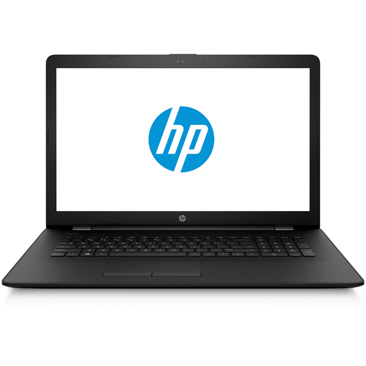

Интернет-магазин Ноутбукин
Меню
HP 17-ak066ur 2CV16EA

Описание
HP 17-ak066ur – универсальный ноутбук, которым можно пользоваться как в офисе, так и дома.
По производительности он способен соперничать со многими стационарными компьютерами, но при этом существенно превосходит их в мобильности.
БОЛЬШОЙ ЯРКИЙ ЭКРАН
Ноутбук оборудован 17,3-дюймовым дисплеем с разрешением 1600х900 пикселей,
который подходит как для повседневной работы с документами, так и для просмотра фильмов и фотографий.
Светодиодная подсветка обеспечивает ему необходимую яркость, а антибликовое покрытие позволяет комфортно работать
на улице в солнечный день или в помещении, где включён свет.
ВЫСОКАЯ ПРОИЗВОДИТЕЛЬНОСТЬ
Эта модель хорошо справляется с повседневными задачами: подготовкой текстовых документов, таблиц и презентаций,
просмотром веб-сайтов, проверкой электронной почты. Также возможностей процессора и оперативной памяти хватит для плавного
воспроизведения видеороликов и полноразмерных фильмов.
НЕОБХОДИМЫЕ ИНТЕРФЕЙСЫ
Разработчики предусмотрели разъёмы USB и HDMI, с помощью которых к ноутбуку легко можно подключить внешние
устройства и носители информации, например, флешку или крупноформатный монитор.